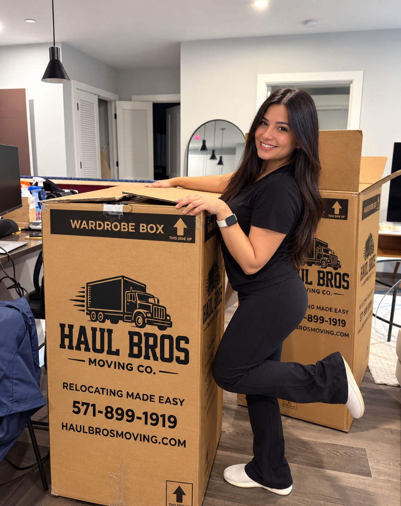

15 Best Places to Live in Northern Virginia in 2026: A Data-Informed Local Guide
Discover the best places to live in Northern Virginia in 2026. Compare Arlington, Vienna, Fairfax, Ashburn, Woodbridge and more, with housing data and moving tips.

Thinking about moving to Northern Virginia? You're considering one of the most desirable regions in the Washington, D.C., metropolitan area, with communities offering everything from walkable urban neighborhoods and historic downtowns to suburban homes, waterfront living, and extensive outdoor recreation.
But where should you actually live?
Is Arlington worth its higher housing costs? Is Vienna a good place to raise a family? Should you choose Reston or Ashburn? And where can you find more affordable housing without moving too far from major employment centers?
At Haul Bros Moving Co LLC, we help homeowners, renters, military households, and businesses relocate throughout Northern Virginia. We know that choosing a community involves much more than finding an attractive house. Commute times, schools, housing expenses, parking, accessibility, and lifestyle all matter.
This 2026 guide explores 15 Northern Virginia communities using published rankings, government housing statistics, official transportation information, and practical local knowledge.
How we selected the best places to live in Northern Virginia
We considered the following:
- Published community rankings: Including Niche's 2026 Best Places to Live results, which draw on Census, crime, education, employment, and other data.
- Housing affordability: Using the U.S. Census Bureau's 2020–2024 American Community Survey and broader regional housing comparisons.
- Transportation: Access to Metro, Virginia Railway Express, major highways, and employment centers.
- Lifestyle and amenities: Parks, shopping, dining, trails, recreation, and community character.
- Housing options: Apartments, townhouses, condominiums, and detached homes.
- Moving considerations: Building access, stairs, parking restrictions, and typical property layouts.
Our list is an editorial selection, not an official government ranking or a newly calculated statistical index. Positions are informed by published research, and we identify specific external rankings where available. Because Niche uses different categories for cities, suburbs, and neighborhoods, those rankings should not be treated as directly interchangeable.
Northern Virginia Magazine's March 2026 reporting highlighted Arlington as the fourth-best U.S. city and Alexandria as the eighteenth-best in Niche's city rankings. Colonial Village in Arlington was ranked second nationally among all places to live.
Quick comparison: Which Northern Virginia community is right for you?
| Community | Best suited for | Main consideration |
|---|---|---|
| Arlington | Urban living and D.C. commuting | Higher housing costs |
| Vienna | Small-town suburban living | Expensive homeownership |
| Oakton | Established residential neighborhoods | Car dependence |
| Ashburn | Planned communities and amenities | Longer trips to D.C. |
| Falls Church | Convenient inner-suburb location | Limited housing inventory in the city |
| Reston | Trails, lakes, and Metro access | Association and housing costs |
| Fairfax | Established suburban living | Traffic on major roads |
| McLean | Luxury homes and Tysons access | High property prices |
| Alexandria | Historic charm and waterfront living | Parking and housing costs |
| Burke | Parks and quieter residential settings | Limited Metro access |
| Herndon | Dulles corridor employment | Neighborhood-dependent transit |
| Gainesville | Western Prince William suburbs | Longer eastbound commutes |
| Woodbridge | Housing variety and relative value | I-95 congestion |
| Bristow | Planned residential communities | Car-oriented lifestyle |
| Stafford | More residential space and Quantico access | Long D.C. commute |
1. Arlington, Virginia — Best overall for urban living and D.C. commuters
Arlington earns a leading position in our guide because of its strong national recognition, transportation connections, access to jobs, and wide range of residential neighborhoods.
According to Niche's 2026 rankings reported by Northern Virginia Magazine, Arlington ranked #4 among U.S. cities for best places to live. The Arlington neighborhood of Colonial Village ranked #2 nationally among places to live.
Best Arlington neighborhoods to explore
Clarendon: Restaurants, nightlife, apartment communities, and Orange and Silver Line Metro access.
Ballston: High-rise apartments, shopping, office developments, and Metro access.
Colonial Village: Garden-style residential buildings and proximity to Rosslyn and Courthouse.
Rosslyn: High-rise living, access to Georgetown, and Metro connections.
Shirlington: Restaurants, theater, apartments, and a village-style commercial center, though without its own Metro station.
Housing and cost of living
The U.S. Census Bureau reports that Arlington County's median owner-occupied home value was $895,000, with median gross monthly rent of $2,322, based on 2020–2024 data.
These are county medians, not current prices for a specific neighborhood.
Advantages
Arlington provides convenient access to major employers, Metro stations, bicycle routes, restaurants, and Washington, D.C.
Potential drawbacks
Housing can be expensive, parking may be limited, and apartment buildings frequently have specific moving procedures.
Moving tip from Haul Bros: If you're moving into a high-rise in Ballston, Rosslyn, or Clarendon, reserve your service elevator and loading dock before scheduling the moving crew.
2. Vienna, Virginia — Best for small-town suburban living
Vienna offers a combination of established residential neighborhoods, community events, parks, and a walkable town center.
Its national ranking provides measurable support for including it near the top.
In Niche's 2026 rankings, Vienna placed #123 of 6,807 U.S. suburbs for best places to live and #8 among Virginia places to raise a family.
Neighborhoods to consider
Downtown Vienna, Westbriar, and neighborhoods around Church Street and Maple Avenue.
Why residents consider Vienna
The town offers access to the W&OD Trail, local businesses, parks, and community facilities. Tysons and Fairfax are nearby, and the Vienna/Fairfax–GMU Metro station provides Orange Line access.
Things to consider
Vienna is not generally a budget housing market. Buyers should compare older homes, renovated properties, and newer construction separately.
Moving tip: Older Vienna houses may have narrow entrances, basements, and staircases. Measure large furniture before moving day.
3. Oakton, Virginia — Best for established residential surroundings
Oakton is a Fairfax County community with wooded residential areas, larger properties, townhouses, and access to nearby business districts.
Niche ranked Oakton #161 among 6,807 U.S. suburbs for best places to live in 2026 and #4 among Fairfax County suburbs.
Why consider Oakton?
Oakton offers access to Vienna, Fairfax, Tysons, and I-66, while many residential streets have a quieter suburban character.
Housing options
Detached homes, townhouses, and condominium communities are available, although prices vary substantially.
Things to consider
Many everyday trips require a car, and larger properties may involve additional maintenance expenses.
Moving tip: For homes with multiple levels or substantial basement storage, prepare a room-by-room inventory before requesting your moving estimate.
4. Ashburn, Virginia — Best for planned suburban communities
Ashburn is a major residential community in eastern Loudoun County, known for planned neighborhoods, recreation, retail centers, and proximity to the Dulles corridor.
Niche's 2026 rankings place Ashburn #201 among U.S. suburbs for best places to live and #11 among Virginia suburbs for public schools.
Popular neighborhoods
- Brambleton
- Broadlands
- Ashburn Village
- Ashburn Farm
- One Loudoun area
Why consider Ashburn?
Many planned communities offer pools, trails, recreation centers, and neighborhood shopping.
Ashburn also has Silver Line Metro service, providing a rail connection toward Tysons, Arlington, and Washington, D.C.
Things to consider
Compare HOA assessments, parking policies, and actual commuting distances. A home with an Ashburn address is not necessarily within walking distance of Metro.
Moving tip: Newer townhouses often have three or four levels, so provide your moving company with the exact number of stairs and the location of heavy furniture.
5. Falls Church, Virginia — Best for convenient inner-suburb living
Falls Church offers a small-city atmosphere with access to major Northern Virginia employment centers.
The independent City of Falls Church has its own government and school division. However, many properties using a Falls Church mailing address are located in Fairfax County.
Neighborhoods and areas to explore
Downtown Falls Church, Broadmont, and nearby areas around West Falls Church and East Falls Church.
Why consider Falls Church?
Its location is convenient for residents working in Arlington, Tysons, or Washington, D.C. The surrounding area has Metro connections, the W&OD Trail, restaurants, and neighborhood parks.
Things to consider
Housing costs can be high, and municipal boundaries matter when researching schools and taxes.
Moving tip: Confirm whether your property is in the City of Falls Church or Fairfax County when checking parking and moving regulations.
6. Reston, Virginia — Best for trails, lakes, and planned-community amenities
Reston is one of Northern Virginia's best-known planned communities, combining residential villages, trails, lakes, and a major town center.
Niche ranks Reston #282 among 6,807 U.S. suburbs for best places to live in 2026.
Neighborhoods to explore
Lake Anne, North Point, South Lakes, Hunters Woods, and Reston Town Center.
Why consider Reston?
Reston offers outdoor recreation and community amenities alongside office developments and retail. Its Silver Line stations include Wiehle–Reston East and Reston Town Center.
Things to consider
Some homes are subject to association assessments and community regulations. Transit access also differs significantly between Reston's residential villages.
Moving tip: For Reston apartment buildings, verify elevator reservations, certificates of insurance, and moving truck parking.
7. Fairfax, Virginia — Best for established suburban living and local amenities
Fairfax is a popular destination for people who want established neighborhoods, convenient shopping, parks, and access to Northern Virginia employment centers.
The independent City of Fairfax and surrounding Fairfax County are separate jurisdictions. This distinction matters when researching schools, property taxes, and municipal services.
Neighborhoods to consider
Fairfax City, Fair Lakes, Fair Oaks, Mantua, and Kings Park West.
Why consider Fairfax?
Fairfax offers a broad selection of apartments, townhouses, condominiums, and detached homes. Residents can access George Mason University, Old Town Fairfax, Fair Oaks Mall, and numerous parks.
Transportation
Major roads include I-66, Route 50, Route 29, and Fairfax County Parkway. Vienna/Fairfax–GMU Metro station serves the surrounding area.
Potential drawbacks
Traffic can be substantial, particularly along I-66 and Route 50. Housing prices vary widely by neighborhood.
Moving tip: When relocating into a detached Fairfax home, include basement storage, garage items, outdoor furniture, and appliances in your moving inventory.
8. McLean, Virginia — Best for luxury housing and Tysons employment access
McLean is known for its upscale housing market, established neighborhoods, and proximity to major employers in Tysons and Washington, D.C.
Neighborhoods to explore
Downtown McLean, Chesterbrook, Langley, and surrounding residential communities.
Why consider McLean?
McLean offers large detached homes, access to parks and recreation, proximity to Great Falls Park, and connections to Tysons.
The McLean Silver Line station provides rail access along the Dulles corridor and toward Washington, D.C.
Potential drawbacks
Homeownership costs can be substantial, especially for larger properties and desirable lots.
Moving tip: Large homes may require additional moving crew members, specialty furniture protection, and detailed room placement plans.
9. Alexandria, Virginia — Best for historic charm and waterfront living
Alexandria combines historic neighborhoods, waterfront destinations, restaurants, shopping, and access to Washington, D.C.
Its inclusion is also supported by published rankings: Northern Virginia Magazine reported that Alexandria ranked #18 among U.S. cities in Niche's 2026 Best Cities to Live rankings.
Neighborhoods to explore
Old Town: Historic rowhouses, King Street, independent shops, and waterfront attractions.
Del Ray: Neighborhood restaurants, residential streets, and a distinctive commercial district along Mount Vernon Avenue.
Potomac Yard: Modern residential developments, retail, and Metro access.
Carlyle: Condominiums, apartments, offices, and access to the King Street–Old Town area.
Why consider Alexandria?
The city offers several Metro stations, access to Reagan National Airport, the Mount Vernon Trail, and a mix of historic and modern housing.
Potential drawbacks
Parking restrictions, expensive properties, and older building layouts can present challenges.
Moving tip: For Old Town Alexandria moves, confirm parking arrangements and measure doorways and staircases before moving large furniture.
10. Burke, Virginia — Best for outdoor recreation and quieter suburban neighborhoods
Burke is an established Fairfax County residential community with access to parks, trails, and recreation.
Neighborhoods to explore
Burke Centre, Burke Station, and Longwood Knolls.
Why consider Burke?
Burke Lake Park offers outdoor recreation, while Burke Centre and surrounding communities provide a mixture of detached houses and townhomes.
Burke Centre also has a Virginia Railway Express station, offering an alternative to driving for some commuters.
Potential drawbacks
Many neighborhoods are primarily car-dependent, and housing availability can be limited in particular subdivisions.
Moving tip: Split-level houses and homes with basement staircases may require additional planning for large furniture.
11. Herndon, Virginia — Best for Dulles corridor workers
Herndon offers a historic downtown, residential neighborhoods, and convenient access to the Dulles employment corridor.
Neighborhoods to explore
Downtown Herndon, nearby Franklin Farm, and the McNair area.
Why consider Herndon?
The town offers restaurants, community events, access to the W&OD Trail, and proximity to Washington Dulles International Airport.
Herndon also benefits from the Silver Line extension, which connects the Dulles corridor with other Northern Virginia employment centers.
Potential drawbacks
Commuting convenience depends on the specific property, and airport-related traffic and noise can affect certain areas.
Moving tip: For apartments and townhomes, confirm stair access, parking restrictions, and elevator requirements before booking.
12. Gainesville, Virginia — Best for western Prince William County suburban living
Gainesville offers residential communities, shopping centers, and access to outdoor recreation in western Prince William County.
Neighborhoods to explore
Virginia Oaks, Heritage Hunt, and nearby communities around Haymarket.
Why consider Gainesville?
The area offers a variety of detached homes and townhouses, retail destinations such as Virginia Gateway, and access to I-66 and Route 29.
Potential drawbacks
Commuting toward Arlington or Washington, D.C., can be time-consuming, especially during peak traffic.
Moving tip: For larger homes, provide your movers with a complete inventory, including garages, basements, sheds, and outdoor equipment.
13. Woodbridge, Virginia — Best for housing variety and relative affordability
Woodbridge is one of our strongest recommendations for people seeking a variety of housing types and potentially lower costs than the inner Northern Virginia suburbs.
It offers apartments, condominiums, townhouses, detached homes, retail destinations, parks, and access to commuter transportation.
What does the actual housing data show?
According to the U.S. Census Bureau's 2020–2024 estimates:
| Housing measure | Prince William County | Arlington County |
|---|---|---|
| Median owner-occupied home value | $530,100 | $895,000 |
| Median gross monthly rent | $2,067 | $2,322 |
Prince William County's median owner-occupied home value was approximately 41% lower than Arlington County's over this measurement period.
That is meaningful evidence supporting Woodbridge as a place to investigate for housing value. However, these are county-wide figures, not Woodbridge-specific market medians.
Neighborhoods to explore
Lake Ridge: Established residential neighborhoods, parks, and proximity to the Occoquan Reservoir.
Belmont Bay: Waterfront-oriented residential development near the Occoquan River.
Potomac Club: Townhomes and condominiums near Stonebridge at Potomac Town Center.
Westridge: Planned residential community in the Lake Ridge area.
Dale City: A large residential area with a mix of housing options and local amenities.
Transportation and commuting
Woodbridge has access to I-95, Route 1, commuter bus services, and Virginia Railway Express.
The official VRE station directory confirms that Woodbridge station is served by the Fredericksburg Line and offers parking and local transit connections.
Why consider Woodbridge?
Woodbridge is worth exploring for residents who want housing variety, shopping, recreation, and a suburban environment.
Potential drawbacks
I-95 congestion is an important consideration, especially for people commuting to Arlington or Washington, D.C.
Moving tip from Haul Bros: When moving to Woodbridge, provide details about townhome stairs, apartment floors, elevator reservations, and parking availability. These details help us estimate your moving time accurately.
14. Bristow, Virginia — Best for planned residential neighborhoods
Bristow is a suburban community in Prince William County, located near Manassas and Gainesville.
Neighborhoods to explore
Braemar, Kingsbrooke, and Victory Lakes.
Why consider Bristow?
Bristow offers planned residential developments, community recreation amenities, and a mix of townhouses and detached homes.
Its location provides access to shopping and employment areas in Manassas and Gainesville.
Potential drawbacks
Most neighborhoods require a car for everyday activities, and commuting east toward Washington, D.C., can take significant time.
Moving tip: Many planned developments have HOA parking rules. Confirm where a 26-foot moving truck can park before moving day.
15. Stafford, Virginia — Best for residential space and Quantico-area commuting
Stafford is a practical option for people seeking suburban housing and access to Marine Corps Base Quantico, Fredericksburg, and surrounding communities.
Stafford County is frequently included in the broader Northern Virginia relocation market, although some narrower geographic definitions of Northern Virginia exclude it.
Neighborhoods to explore
Embrey Mill: A planned community with neighborhood amenities.
Aquia Harbour: An established gated residential community with recreational amenities.
Stafford Lakes: Residential neighborhoods with access to nearby shopping and transportation routes.
Why consider Stafford?
Stafford offers a variety of detached houses and townhomes and may provide more space for a given housing budget than many closer-in locations.
Potential drawbacks
I-95 congestion can create long and unpredictable commutes toward Arlington and Washington, D.C.
Moving tip: If relocating from Alexandria, Arlington, or Fairfax to Stafford, account for highway travel and the volume of household belongings when estimating moving costs.
Which Northern Virginia location is most affordable?
Affordability should be measured using housing expenses and household income, rather than assuming that one entire city is inexpensive.
Here is a comparison using U.S. Census Bureau data for three major Northern Virginia counties.
Compare county-wide housing estimates in the Census QuickFacts sources below. These historical medians are not current listing prices.
What this means for someone relocating
Prince William County is worth investigating for comparatively lower housing costs. Arlington offers more transit-oriented urban neighborhoods but has a much higher median owner-occupied home value.
Loudoun County has many planned suburban communities, but its county-wide median rent is not necessarily lower than Arlington's.
Actual costs depend on your property type, square footage, location, HOA or condominium fees, parking, and other expenses.
How to choose the right Northern Virginia neighborhood
Consider your actual commute
Northern Virginia traffic varies significantly by route and time of day. Before selecting a neighborhood, test your work commute during your normal departure and return hours.
Verify school assignments
Public school assignments depend on the property address. Review information directly through the appropriate school division and the Virginia School Quality Profiles.
Do not assume that every property with a particular city mailing address belongs to the same school district.
Compare total housing expenses
Beyond rent or mortgage payments, consider utilities, insurance, parking, property taxes, HOA assessments, and transportation.
Research safety at the neighborhood level
Use local police department reports and official Virginia crime data. County-wide statistics do not necessarily describe the conditions around an individual property.
Visit before deciding
Visit prospective neighborhoods during morning commutes, evenings, and weekends. Observe parking, traffic, noise, pedestrian access, and proximity to everyday services.
How much do professional movers cost in Northern Virginia in 2026?
When planning your relocation, understanding moving costs can help you budget accurately.
At Haul Bros Moving Co LLC, we believe customers deserve transparent pricing and a clear understanding of the services included.
Haul Bros Moving Co LLC local moving rates
| Moving package | First 2 hours | Each additional hour |
|---|---|---|
| 2 professional movers + truck | $395 | $159 |
| 3 professional movers + truck | $495 | $189 |
| 4 professional movers + truck | $695 | $249 |
| 2 movers, labor only | $295 | $115 |
Our standard minimum is two hours. Additional time is billed in 15-minute increments.
Example local moving costs
| Move duration | 2 movers + truck | 3 movers + truck |
|---|---|---|
| 2 hours | $395 | $495 |
| 3 hours | $554 | $684 |
| 4 hours | $713 | $873 |
| 5 hours | $872 | $1,062 |
| 6 hours | $1,031 | $1,251 |
These are calculated from Haul Bros' standard rates, not average market prices. Optional packing, materials, specialty items, and separately quoted services may change the total.
What's included in your move?
Our standard moving service includes professional movers, a moving truck for truck-inclusive packages, moving blankets, stretch wrap, dollies, floor protection, furniture disassembly and reassembly as needed, loading, transportation, and unloading.
We do not charge separate standard truck, fuel, stair, elevator, or equipment fees.
We also offer military, senior, and student discounts of 5% for qualifying customers.
Frequently Asked Questions About Living in Northern Virginia
These FAQs address common questions people ask when researching Northern Virginia neighborhoods, housing costs, commuting, and moving companies.
1. What is the best place to live in Northern Virginia in 2026?
Arlington is one of the strongest choices for urban living, transportation, and employment access. It ranked fourth among U.S. cities in Niche's 2026 Best Cities to Live rankings. Vienna, Oakton, Ashburn, and Reston also have strong published suburban rankings. The best choice depends on your personal priorities.
2. What are the most affordable places to live in Northern Virginia?
Woodbridge, Dale City, Manassas, and parts of Stafford are worth researching for more budget-conscious housing options. Census data shows Prince William County has a lower median owner-occupied home value than Arlington and Loudoun counties, although prices vary by property.
3. Is Woodbridge, VA, a good place to live?
Woodbridge offers varied housing, shopping destinations, parks, and VRE commuter rail access. It may be a practical choice for residents who prioritize suburban living and housing value, provided the commute meets their needs.
4. Is Arlington or Alexandria better?
Arlington is attractive for residents who prioritize urban amenities, Metro access, and proximity to major employment centers. Alexandria offers historic neighborhoods, waterfront attractions, and a mix of urban and suburban residential areas.
5. What are good Northern Virginia communities for families?
Vienna, Oakton, Ashburn, Burke, Reston, and Fairfax are all worth considering. Compare housing, recreation, transportation, and verified school assignments rather than relying on a general family-friendly label.
6. Is Ashburn or Reston better?
Ashburn may appeal to people interested in planned suburban communities and housing options in Loudoun County. Reston offers an extensive trail network, lakes, established residential villages, and closer proximity to many Fairfax County employment centers. Both have Silver Line Metro service.
7. Where should I live if I work in Washington, D.C.?
Arlington, Alexandria, Falls Church, and neighborhoods near Metro stations may provide convenient commuting options. The best location depends on your workplace and preferred mode of transportation.
8. Is Fairfax a good place to buy a home?
Fairfax offers established neighborhoods, shopping, parks, and access to major roads and employment centers. Buyers should compare property prices, condition, taxes, school assignments, and commute times.
9. Is Northern Virginia expensive?
Many Northern Virginia communities have relatively high housing costs. Census data shows significant differences between counties, so researching individual neighborhoods is essential.
10. Is Stafford cheaper than Arlington?
Stafford often offers opportunities to find larger homes farther from Washington, D.C. However, current listing prices, transportation costs, and property expenses should be compared before concluding that a particular home is less expensive overall.
11. Does Northern Virginia have public transportation?
Yes. The region is served by Metrorail, Virginia Railway Express, local buses, and commuter services. Access varies significantly by community.
12. What is the best Northern Virginia neighborhood for young professionals?
Clarendon, Ballston, Rosslyn, Old Town Alexandria, and Reston Town Center are worth exploring for their employment access, dining, entertainment, and transportation options.
13. How far in advance should I book movers in Northern Virginia?
Booking approximately two to four weeks ahead is a practical starting point. For summer weekends, month-end dates, large moves, and buildings with elevator requirements, earlier reservations may be beneficial.
14. How much does a two-bedroom apartment move cost in Northern Virginia?
With Haul Bros Moving Co LLC, a four-hour move using two movers and a truck costs $713 under standard local rates. Actual time depends on inventory, distance, stairs, elevators, and building access.
15. Do movers charge extra for stairs in Northern Virginia?
Moving companies have different pricing policies. Haul Bros Moving Co LLC does not charge a separate standard stair fee, although stairs can increase the total moving time.
16. Can movers help with packing and unpacking?
Yes. Haul Bros Moving Co LLC offers packing, unpacking, furniture handling, and loading and unloading services. Packing materials and optional services may be quoted separately.
17. Do I need to reserve an elevator for my move?
Many Northern Virginia apartment and condominium buildings require elevator reservations. Some also require certificates of insurance or specific loading dock arrangements.
18. Are there movers for military families near Quantico?
Yes. Haul Bros Moving Co LLC serves military households in Stafford, Woodbridge, Dumfries, Triangle, and surrounding areas and offers a qualifying military discount.
19. What is the best time of year to move to Northern Virginia?
Spring and fall may offer more comfortable moving weather than the hottest summer months. Summer and month-end periods can be especially busy, so scheduling early is recommended.
20. How can I find reliable local movers in Northern Virginia?
Look for clear written estimates, transparent rates, appropriate licensing and insurance, recent customer feedback, and detailed service terms. Verify interstate mover registration and authority where applicable through the Federal Motor Carrier Safety Administration.

Moving to Northern Virginia? Haul Bros Moving Co LLC Is Ready to Help
Finding the right neighborhood is only the beginning. Whether you're moving into an Arlington apartment, an Alexandria townhouse, a Fairfax single-family home, or a larger property in Woodbridge, choosing experienced movers can make the process easier.
Haul Bros Moving Co LLC provides residential and commercial moving services throughout Northern Virginia, Washington, D.C., and surrounding Maryland communities.
Our services include local moving, long-distance moving, apartment moving, townhouse and single-family home moving, packing and unpacking, office relocation, labor-only services, furniture disassembly and reassembly, senior moving, and military relocations.
Areas we serve
Woodbridge, Dale City, Lake Ridge, Occoquan, Dumfries, Triangle, Stafford, Fredericksburg, Manassas, Gainesville, Haymarket, Bristow, Centreville, Chantilly, Fairfax, Burke, Springfield, Annandale, Alexandria, Arlington, Falls Church, McLean, Tysons, Vienna, Oakton, Reston, Herndon, Sterling, Ashburn, Lorton, and surrounding DMV communities.
Get your Northern Virginia moving quote
Haul Bros Moving Co LLC
Relocating made easy.
571-899-1919
info@haulbrosmoving.com
USDOT #4497497
Request a Moving Estimate
Sources and research methodology
This guide was prepared for 2026 using publicly available rankings, federal housing statistics, and official transportation resources.
Research note: The housing statistics cited are 2020–2024 estimates, not live October 2026 asking prices. The numbered list represents an evidence-informed editorial selection; it should not be presented as a mathematically calculated overall ranking. The article does not claim that every neighborhood has the same school quality, safety level, or affordability.